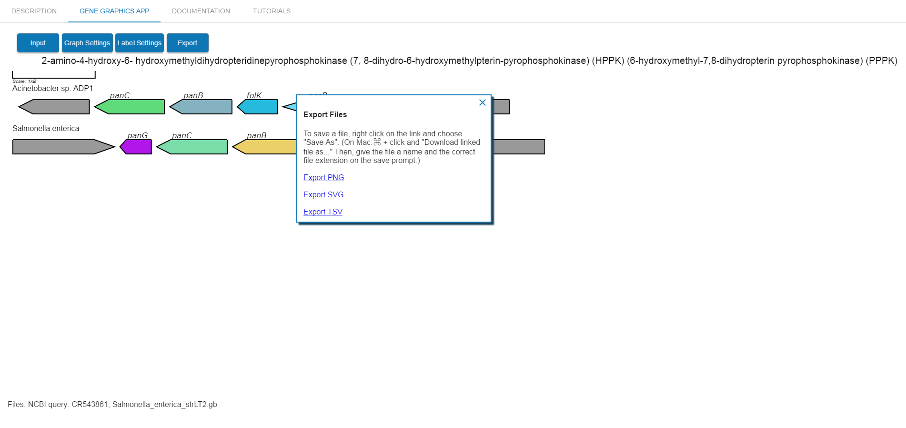

In this tutorial, we will produce a simple figure showing a similar region in two genomes by accessing data from NCBI Genbank. The figure we will make is inspired by a figure in the publication Thiaville Jennifer J., et al., 2016 as Figure 2A. You can access it here: http://journal.frontiersin.org/article/10.3389/fmicb.2016.00431/full
Thiaville Jennifer J., Frelin Océane, García-Salinas Carolina, Harrison Katherine, Hasnain Ghulam, Horenstein Nicole A., Díaz de la Garza Rocio I., Henry Christopher S., Hanson Andrew D., de Crécy-Lagard Valérie, 2016. Experimental and Metabolic Modeling Evidence for a Folate-Cleaving Side-Activity of Ketopantoate Hydroxymethyltransferase (PanB). Frontiers in Microbiology. 7, 431. doi:10.3389/fmicb.2016.00431
The image below is the image from the paper.
For simplicity, we will only be comparing the first two regions found in the image. The final image that we will be produce is shown below.
We will show a comparison between the neighborhoods of the folK gene in two genomes, Acinetobacter baylyi sp. ADP1 and Salmonella enterica strain LT2. Navigate to the "Gene Graphics" app at http://katlabs.cc/genegraphics/. Then, click on "Input" and "Fetch from NCBI". This option allows you to quickly import a whole genome or a specific region of a genome from NCBI Genbank.
Search by Genome location. The Import tool can take genome name or Genbank ID. Enter "Acinetobacter sp." and notice how it narrows down the search as you type. You could simply type "ADP1" and get the result directly, as well. You can click on the genome that you want at any time. Use region 2986058 to 2991851.
After the data is imported, you should see the following region on your screen:
Sometimes, you might want the reverse complement of region accessed from Genbank. The Salmonella enterica strain LT2 genome found in NCBI Genbank by default displays the region we are interested in reversed from the Acinetobacter baylyi region. We can use the NCBI interface to export a file that will show us the region in reverse complement, then upload it to the Gene Graphics tool. In a new tab or window, access the NCBI database homepage at https://www.ncbi.nlm.nih.gov/nucleotide/. Type "Salmonella enterica strain LT2" into the search box. Click "Search".
Click on the result "Salmonella enterica strain LT2, complete genome". It will bring you to the page https://www.ncbi.nlm.nih.gov/nuccore/CP014051.1.
You will see a standard Genbank file. On the right, you will see a box that says "Change region shown". Click to open the options and choose "Selected region". The region we want for this example is from 583556 to 590090. Click "Update View". Then, under "Customize View", select the option "Show reverse complement" and click the "Update View" button underneath.
Now we can export our customized Genbank file. Select "Send" and choose "Complete Record", "File", the Genbank format, and click "Create File" to download it. The file is also available for download here.
Next, return to the Gene Graphics tab and click "Import a File". Follow the dialog options to upload your Genbank file.

Now that both regions are uploaded into the tool, the image can be edited. You may have noticed that our first region has an extra partial gene at the beginning. This is because this gene overlaps the first part of our region by a few bases. We can simply delete the gene by clicking on it and then selecting the trash can icon in the resulting window.

Decrease the width of the image by clicking on "Graph Settings", then "Size settings", and entering 1000 for the "Image Width". Change the height of the genes by decreasing "Gene height" to 30. The resulting image will update when you click Update or tab away from the fields.
Under "Graph Settings", then "Lane settings", toggle the option "Overlapping genes move to a new lane", and toggle the option so that genes may not overlap each other.
Under "Graph Settings", then "Gene shape", toggle the option to change the symbols to tags instead of arrows.
Some of the genes in the region we selected have an unknown or irrelevant function, so we should use a neutral color such as gray. Click on the first gene in the Acinetobacter sp. ADP1 region and select a gray color. Edit the text to remove the label. Then, click on the "Copy Gene Colors" button. This will copy the Gene and Label colors of this gene so that you can paste it to the other genes with unknown or irrelevant functions.
Click or right click on the last and second to last genes in the Acinetobacter sp. ADP1 region, and the first and last gene in the Salmonella enterica strain LT2 region, then select Paste to apply the color to all of them. Note that genes will be outlined with red while they are selected as a destination for the paste.
The folK gene in Acinetobacter sp. ADP1 was not annotated as folK, and its "product" is annotated slightly differently than the folK gene in Salmonella enterica strain LT2. This results in the two genes having different colors, but we would like the colors to be the same. Select folK in Acinetobacter sp. ADP1 and Copy to the second folK as shown below.
Continue naming and editing the colors of the genes as shown in the following image.
Next, change the label positions so that they are above the genes by selecting "Label Settings", "Gene Labels" and then selecting the "Above" option.
Change the font style to italic by choosing "Italic".
The final produced image can be exported as a SVG file or as a PNG file, by clicking on the “Export” button. The edits done in the “Gene Graphics” application can also be exported as a TSV file, which will produce a table. This can be useful if an image is started, but is not yet finished. Reloading the produced TSV file will allow you to continue your edits.
